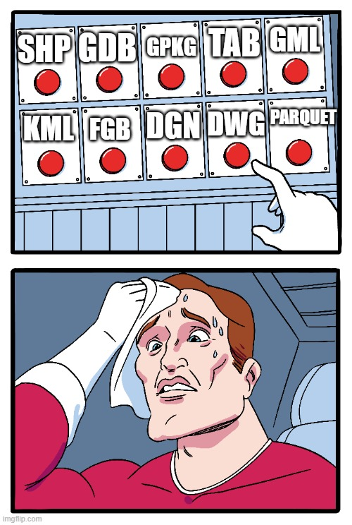
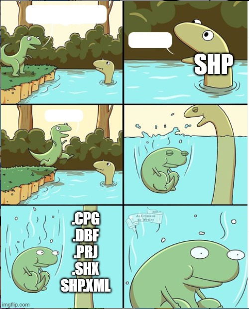
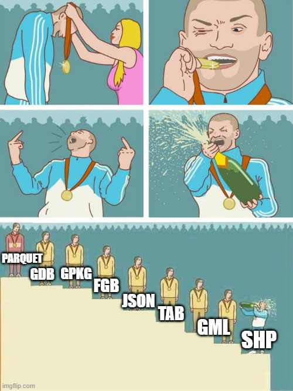
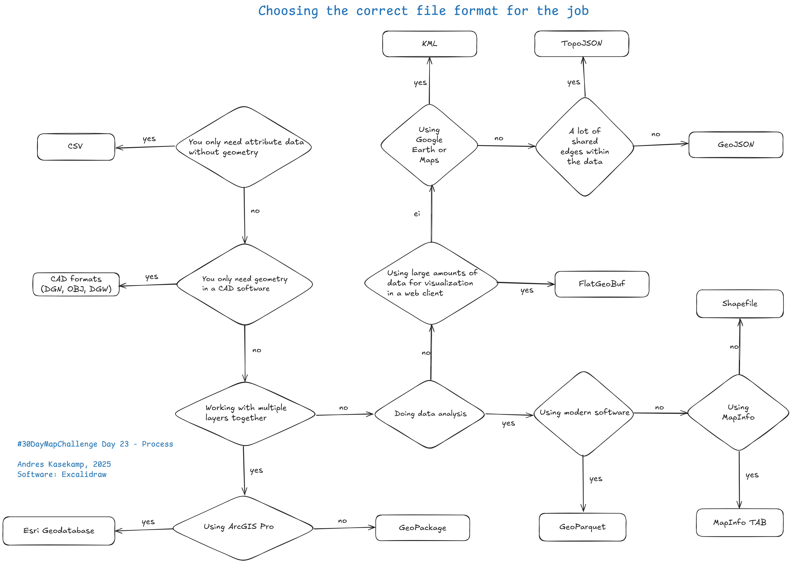

<!DOCTYPE html>
<html lang="en">
  <head>
    <meta charset="utf-8" />
    <meta name="viewport" content="width=device-width, initial-scale=1.0, maximum-scale=1.0, user-scalable=no" />

    <title></title>
    <link rel="stylesheet" href="dist/reveal.css" />
    <link rel="stylesheet" href="css/i62-style.css" id="theme" />
    <link rel="stylesheet" href="plugin/highlight/zenburn.css" />
	<link rel="stylesheet" href="css/layout.css" />
	<link rel="stylesheet" href="plugin/customcontrols/style.css">
	<link rel="stylesheet" href="plugin/chalkboard/style.css">

	<link rel="stylesheet" href="plugin/reveal-pointer/pointer.css" />


    <script defer src="dist/fontawesome/all.min.js"></script>

	<script type="text/javascript">
		var forgetPop = true;
		function onPopState(event) {
			if(forgetPop){
				forgetPop = false;
			} else {
				parent.postMessage(event.target.location.href, "app://obsidian.md");
			}
        }
		window.onpopstate = onPopState;
		window.onmessage = event => {
			if(event.data == "reload"){
				window.document.location.reload();
			}
			forgetPop = true;
		}

		function fitElements(){
			const itemsToFit = document.getElementsByClassName('fitText');
			for (const item in itemsToFit) {
				if (Object.hasOwnProperty.call(itemsToFit, item)) {
					var element = itemsToFit[item];
					fitElement(element,1, 1000);
					element.classList.remove('fitText');
				}
			}
		}

		function fitElement(element, start, end){

			let size = (end + start) / 2;
			element.style.fontSize = `${size}px`;

			if(Math.abs(start - end) < 1){
				while(element.scrollHeight > element.offsetHeight){
					size--;
					element.style.fontSize = `${size}px`;
				}
				return;
			}

			if(element.scrollHeight > element.offsetHeight){
				fitElement(element, start, size);
			} else {
				fitElement(element, size, end);
			}		
		}


		document.onreadystatechange = () => {
			fitElements();
			if (document.readyState === 'complete') {
				if (window.location.href.indexOf("?export") != -1){
					parent.postMessage(event.target.location.href, "app://obsidian.md");
				}
				if (window.location.href.indexOf("print-pdf") != -1){
					let stateCheck = setInterval(() => {
						clearInterval(stateCheck);
						window.print();
					}, 250);
				}
			}
	};


        </script>
  </head>
  <body>
    <div class="reveal">
      <div class="slides"><section ><section data-markdown><script type="text/template"><!-- .slide: class="drop" data-background-image="_Assets/Official_background_Colored.jpg" -->
<div class="" style="position: absolute; left: 0px; top: 0px; height: 700px; width: 960px; min-height: 700px; display: flex; flex-direction: column; align-items: center; justify-content: center" absolute="true">

### GIS Data Formats: From Shapefile to GeoParquet

#### Andres Kasekamp
#### Industry62
</div></script></section><section data-markdown><script type="text/template"><!-- .slide: class="drop" -->
<div class="" style="position: absolute; left: 0px; top: 0px; height: 700px; width: 960px; min-height: 700px; display: flex; flex-direction: column; align-items: center; justify-content: center" absolute="true">

<iframe src="https://wall.sli.do/event/pGPYPMrp93voHhhSboqCME/?section=2309de8f-7008-4162-be3b-1875e69dca20" height="100%" width="100%" frameBorder="0" style="min-height: 560px;" allow="clipboard-write" title="Slido"></iframe>
</div></script></section></section><section ><section data-markdown><script type="text/template"><!-- .slide: class="drop" -->
<div class="" style="position: absolute; left: 0px; top: 0px; height: 700px; width: 960px; min-height: 700px; display: flex; flex-direction: column; align-items: center; justify-content: center" absolute="true">

## Spatial data formats

- Were developed alongside GIS
	- &shy;<!-- .element: class="fragment" data-fragment-index="1" -->1990: open standards 🤗
	- &shy;<!-- .element: class="fragment" data-fragment-index="2" -->2000: web maps 🌐
	- &shy;<!-- .element: class="fragment" data-fragment-index="3" -->2010: cloud-native ☁︎
- &shy;<!-- .element: class="fragment" data-fragment-index="4" -->Data w/ <mark>geo</mark>
- &shy;<!-- .element: class="fragment" data-fragment-index="5" -->**vector** vs raster
</div></script></section><section data-markdown><script type="text/template"><!-- .slide: class="drop" -->
<div class="" style="position: absolute; left: 0px; top: 0px; height: 700px; width: 960px; min-height: 700px; display: flex; flex-direction: column; align-items: center; justify-content: center" absolute="true">


</div></script></section><section data-markdown><script type="text/template"><!-- .slide: class="drop" -->
<div class="" style="position: absolute; left: 0px; top: 0px; height: 700px; width: 960px; min-height: 700px; display: flex; flex-direction: column; align-items: center; justify-content: center" absolute="true">

## Classification

- &shy;<!-- .element: class="fragment" data-fragment-index="1" -->Multicar
- &shy;<!-- .element: class="fragment" data-fragment-index="2" -->Binary
- &shy;<!-- .element: class="fragment" data-fragment-index="3" -->Text-based
- &shy;<!-- .element: class="fragment" data-fragment-index="4" -->Database-based
</div></script></section></section><section ><section data-markdown><script type="text/template"><!-- .slide: class="drop" -->
<div class="" style="position: absolute; left: 0px; top: 0px; height: 700px; width: 960px; min-height: 700px; display: flex; flex-direction: column; align-items: center; justify-content: center" absolute="true">

# [Shapefile](https://desktop.arcgis.com/en/arcmap/latest/manage-data/shapefiles/what-is-a-shapefile.htm)


- Great software support 💪
- &shy;<!-- .element: class="fragment" data-fragment-index="1" -->Limitations w/ attribute data fields and type ⚠️
	- &shy;<!-- .element: class="fragment" data-fragment-index="2" -->Missing ```NULL``` value
- &shy;<!-- .element: class="fragment" data-fragment-index="3" -->Max file size (~2/4 GB) 🚫
- &shy;<!-- .element: class="fragment" data-fragment-index="4" -->👉 [switchfromshapefile.org](https://switchfromshapefile.org/) 👈
</div></script></section><section data-markdown><script type="text/template"><!-- .slide: class="drop" -->
<div class="" style="position: absolute; left: 0px; top: 0px; height: 700px; width: 960px; min-height: 700px; display: flex; flex-direction: column; align-items: center; justify-content: center" absolute="true">


</div></script></section><section data-markdown><script type="text/template"><!-- .slide: class="drop" -->
<div class="" style="position: absolute; left: 0px; top: 0px; height: 700px; width: 960px; min-height: 700px; display: flex; flex-direction: column; align-items: center; justify-content: center" absolute="true">

## [MapInfo TAB](https://docs.precisely.com/docs/sftw/spectrum/22.1/en/webhelp/Spatial/Spatial/source/Resources/resources/datasources/native_tab_datasource.html)


</div></script></section></section><section  data-markdown><script type="text/template"><!-- .slide: class="drop" -->
<div class="" style="position: absolute; left: 0px; top: 0px; height: 700px; width: 960px; min-height: 700px; display: flex; flex-direction: column; align-items: center; justify-content: center" absolute="true">

<div class="" style="position: absolute; left: 40%; top: 0%; height: 20%; width: 20%; display: flex; flex-direction: column; align-items: center; justify-content: center" >


</div>

<div class="" style="position: absolute; left: 0%; top: 0%; height: 100%; width: 50%; display: flex; flex-direction: column; align-items: center; justify-content: center" >


### GeoParquet

- Apache Parquet <!-- .element: class="fragment" data-fragment-index="1" -->
- 🌐 <!-- .element: class="fragment" data-fragment-index="2" -->  [geoparquet.org](geoparquet.org) <!-- element class="fragment" -->
- Analysis 📊 <!-- .element: class="fragment" data-fragment-index="3" -->
	- Alternatives: shp, gpkg, gdb <!-- .element: class="fragment" data-fragment-index="3" -->

</div>

<div class="" style="position: absolute; left: 50%; top: 0%; height: 100%; width: 50%; display: flex; flex-direction: column; align-items: center; justify-content: center" >


### FlatGeoBuf

- FlatBuffers (Google) <!-- .element: class="fragment" data-fragment-index="1" -->
- 🌐 <!-- .element: class="fragment" data-fragment-index="2" -->  [flatgeobuf.org](flatgeobuf.org)  <!-- element class="fragment" -->
- Visualisation 🖼️ <!-- .element: class="fragment" data-fragment-index="3" -->
	- Alternatives: json, kml, mvt <!-- .element: class="fragment" data-fragment-index="3" -->

</div>
</div></script></section><section  data-markdown><script type="text/template"><!-- .slide: class="drop" -->
<div class="" style="position: absolute; left: 0px; top: 0px; height: 700px; width: 960px; min-height: 700px; display: flex; flex-direction: column; align-items: center; justify-content: center" absolute="true">

<div class="" style="position: absolute; left: 40%; top: 0%; height: 20%; width: 20%; display: flex; flex-direction: column; align-items: center; justify-content: center" >


</div>

<div class="" style="position: absolute; left: -20%; top: 0%; height: 100%; width: 50%; display: flex; flex-direction: column; align-items: center; justify-content: center" >


### KML
- XML `<></>` <!-- .element: class="fragment" data-fragment-index="1" -->
- Google products 😐<!-- .element: class="fragment" data-fragment-index="2" -->
- Only WGS84 <!-- .element: class="fragment" data-fragment-index="3" -->
- KMZ <!-- .element: class="fragment" data-fragment-index="4" -->

</div>

<div class="" style="position: absolute; left: 25%; top: 0%; height: 100%; width: 50%; display: flex; flex-direction: column; align-items: center; justify-content: center" >


### GML
- XML  `<></>` <!-- .element: class="fragment" data-fragment-index="1" -->
- WFS 📉 <!-- .element: class="fragment" data-fragment-index="2" -->
- All projections <!-- .element: class="fragment" data-fragment-index="3" -->
- CityGML <!-- .element: class="fragment" data-fragment-index="4" -->

</div>

<div class="" style="position: absolute; left: 70%; top: 0%; height: 100%; width: 50%; display: flex; flex-direction: column; align-items: center; justify-content: center" >


### GeoJSON
- JSON  `{}` <!-- .element: class="fragment" data-fragment-index="1" -->
- WFS, OGC API 📈  <!-- .element: class="fragment" data-fragment-index="2" -->
- It's complicated  <!-- .element: class="fragment" data-fragment-index="3" -->
- TopoJSON <!-- .element: class="fragment" data-fragment-index="4" -->

</div>
</div></script></section><section  data-markdown><script type="text/template"><!-- .slide: class="drop" -->
<div class="" style="position: absolute; left: 0px; top: 0px; height: 700px; width: 960px; min-height: 700px; display: flex; flex-direction: column; align-items: center; justify-content: center" absolute="true">

<div class="" style="position: absolute; left: 40%; top: 0%; height: 20%; width: 20%; display: flex; flex-direction: column; align-items: center; justify-content: center" >


</div>

<div class="" style="position: absolute; left: 0%; top: 0%; height: 100%; width: 50%; display: flex; flex-direction: column; align-items: center; justify-content: center" >


### GeoPackage

- .gpkg  <!-- .element: class="fragment" data-fragment-index="1" -->
- OGC, sqlite <!-- .element: class="fragment" data-fragment-index="2" -->
- 🌐 <!-- .element: class="fragment" data-fragment-index="3" -->  [geopackage.org](geopackage.org)<!-- element class="fragment" -->
- Missing complicated data models <!-- .element: class="fragment" data-fragment-index="4" -->
 

</div>

<div class="" style="position: absolute; left: 50%; top: 0%; height: 100%; width: 50%; display: flex; flex-direction: column; align-items: center; justify-content: center" >


### Geodatabase

- .gdb (directory) <!-- .element: class="fragment" data-fragment-index="1" -->
- ESRI <!-- .element: class="fragment" data-fragment-index="2" -->
- 🌐 <!-- .element: class="fragment" data-fragment-index="3" --> [pro.arcgis.com](pro.arcgis.com)<!-- element class="fragment" -->
- Has topology, networks, domains... <!-- .element: class="fragment" data-fragment-index="4" -->

</div>
</div></script></section><section  data-markdown><script type="text/template"><!-- .slide: class="drop" -->
<div class="" style="position: absolute; left: 0px; top: 0px; height: 700px; width: 960px; min-height: 700px; display: flex; flex-direction: column; align-items: center; justify-content: center" absolute="true">

# Testing 🧪

1. File size 💾
2. File read time ⏳️
	- [GeoPandas](https://geopandas.org/en/stable/)
</div></script></section><section ><section data-markdown><script type="text/template"><!-- .slide: class="drop" -->
<div class="" style="position: absolute; left: 0px; top: 0px; height: 700px; width: 960px; min-height: 700px; display: flex; flex-direction: column; align-items: center; justify-content: center" absolute="true">

## [Estonian cadastral units](https://metadata.geoportaal.ee/geonetwork/srv/api/records/e71eb8ae-a760-4c26-8ca3-9275d984715f)

- 774 053 (09.10.2025)
- Polygons
- 31 attributes
</div></script></section><section data-markdown><script type="text/template"><!-- .slide: class="drop" -->
<div class="" style="position: absolute; left: 0px; top: 0px; height: 700px; width: 960px; min-height: 700px; display: flex; flex-direction: column; align-items: center; justify-content: center" absolute="true">


</div></script></section><section data-markdown><script type="text/template"><!-- .slide: class="drop" -->
<div class="" style="position: absolute; left: 0px; top: 0px; height: 700px; width: 960px; min-height: 700px; display: flex; flex-direction: column; align-items: center; justify-content: center" absolute="true">


</div></script></section><section data-markdown><script type="text/template"><!-- .slide: class="drop" -->
<div class="" style="position: absolute; left: 0px; top: 0px; height: 700px; width: 960px; min-height: 700px; display: flex; flex-direction: column; align-items: center; justify-content: center" absolute="true">

###  Read time


</div></script></section></section><section ><section data-markdown><script type="text/template"><!-- .slide: class="drop" -->
<div class="" style="position: absolute; left: 0px; top: 0px; height: 700px; width: 960px; min-height: 700px; display: flex; flex-direction: column; align-items: center; justify-content: center" absolute="true">

# Big data

## [Estonia individual trees](https://metadata.geoportaal.ee/geonetwork/srv/api/records/e71eb8ae-a760-4c26-8ca3-9275d984715f)

- 40 506 048 🌳
- Cannot use older file formats or text-based formats ❗
	- GeoParquet, Geodatabase, GeoPackage, FlatGeoBuf 👍
</div></script></section><section data-markdown><script type="text/template"><!-- .slide: class="drop" -->
<div class="" style="position: absolute; left: 0px; top: 0px; height: 700px; width: 960px; min-height: 700px; display: flex; flex-direction: column; align-items: center; justify-content: center" absolute="true">

# GeoParquet

| Software         | Time (in seconds) |
| ---------------- | ----------------- |
| 🦆 DuckDB        | 0.0057            |
| 🟣 GeoParquet.jl | 51.17             |
| 🐼 GeoPandas     | 69.51             |
</div></script></section></section><section  data-markdown><script type="text/template"><!-- .slide: class="drop" -->
<div class="" style="position: absolute; left: 0px; top: 0px; height: 700px; width: 960px; min-height: 700px; display: flex; flex-direction: column; align-items: center; justify-content: center" absolute="true">

## Converting 🔁

- [FME](fme.safe.com/pricing) <!-- .element: class="fragment highlight-red strike" data-fragment-index="1" -->
- [GDAL](gdal.org) <!-- .element: class="fragment highlight-green " data-fragment-index="1" -->
</div></script></section><section ><section data-markdown><script type="text/template"><!-- .slide: class="drop" -->
<div class="" style="position: absolute; left: 0px; top: 0px; height: 700px; width: 960px; min-height: 700px; display: flex; flex-direction: column; align-items: center; justify-content: center" absolute="true">


</div></script></section><section data-markdown><script type="text/template"><!-- .slide: class="drop" -->
<div class="" style="position: absolute; left: 0px; top: 0px; height: 700px; width: 960px; min-height: 700px; display: flex; flex-direction: column; align-items: center; justify-content: center" absolute="true">


</div></script></section></section><section  data-markdown><script type="text/template"><!-- .slide: class="drop" -->
<div class="" style="position: absolute; left: 0px; top: 0px; height: 700px; width: 960px; min-height: 700px; display: flex; flex-direction: column; align-items: center; justify-content: center" absolute="true">

<div class="" style="position: absolute; left: 0%; top: 0%; height: 100%; width: 50%; display: flex; flex-direction: column; align-items: center; justify-content: center" >

**Contact**  
📧 [Andres.Kasekamp@industry62.com](mailto:Andres.Kasekamp@industry62.com)  
🚀 LinkedIn: [Andres Kasekamp](https://www.linkedin.com/in/andres-kasekamp-a226b2198/)  
👨‍💻 [MaRu code repository](https://koodivaramu.eesti.ee/maa-ja-ruumiamet/geoinfo/file-format-comparison) \
🗺️ [maamuutjad.eu](https://maamuutjad.eu/)

</div>

<div class="" style="position: absolute; left: 58%; top: 0%; height: 100%; width: 50%; display: flex; flex-direction: column; align-items: center; justify-content: center" >


Buy Me a Coffee 🥺👉👈 
[buymeacoffee.com/andreskasekamp](https://buymeacoffee.com/andreskasekamp)


</div>
</div></script></section></div>
    </div>

    <script src="dist/reveal.js"></script>

    <script src="plugin/markdown/markdown.js"></script>
    <script src="plugin/highlight/highlight.js"></script>
    <script src="plugin/zoom/zoom.js"></script>
    <script src="plugin/notes/notes.js"></script>
    <script src="plugin/math/math.js"></script>
	<script src="plugin/mermaid/mermaid.js"></script>
	<script src="plugin/chart/chart.min.js"></script>
	<script src="plugin/chart/plugin.js"></script>
	<script src="plugin/menu/menu.js"></script>
	<script src="plugin/customcontrols/plugin.js"></script>
	<script src="plugin/chalkboard/plugin.js"></script>
	<script src="plugin/reveal-pointer/pointer.js"></script>

    <script>
      function extend() {
        var target = {};
        for (var i = 0; i < arguments.length; i++) {
          var source = arguments[i];
          for (var key in source) {
            if (source.hasOwnProperty(key)) {
              target[key] = source[key];
            }
          }
        }
        return target;
      }

	  function isLight(color) {
		let hex = color.replace('#', '');

		// convert #fff => #ffffff
		if(hex.length == 3){
			hex = `${hex[0]}${hex[0]}${hex[1]}${hex[1]}${hex[2]}${hex[2]}`;
		}

		const c_r = parseInt(hex.substr(0, 2), 16);
		const c_g = parseInt(hex.substr(2, 2), 16);
		const c_b = parseInt(hex.substr(4, 2), 16);
		const brightness = ((c_r * 299) + (c_g * 587) + (c_b * 114)) / 1000;
		return brightness > 155;
	}

	var bgColor = getComputedStyle(document.documentElement).getPropertyValue('--r-background-color').trim();
	var isLight = isLight(bgColor);

	if(isLight){
		document.body.classList.add('has-light-background');
	} else {
		document.body.classList.add('has-dark-background');
	}

      // default options to init reveal.js
      var defaultOptions = {
        controls: true,
        progress: true,
        history: true,
        center: true,
        transition: 'default', // none/fade/slide/convex/concave/zoom
        plugins: [
          RevealMarkdown,
          RevealHighlight,
          RevealZoom,
          RevealNotes,
          RevealMath.MathJax3,
		  RevealMermaid,
		  RevealChart,
		  RevealCustomControls,
		  RevealMenu,
	      RevealPointer,
		  RevealChalkboard, 
        ],


    	allottedTime: 120 * 1000,

		mathjax3: {
			mathjax: 'plugin/math/mathjax/tex-mml-chtml.js',
		},
		markdown: {
		  gfm: true,
		  mangle: true,
		  pedantic: false,
		  smartLists: false,
		  smartypants: false,
		},

		mermaid: {
			theme: isLight ? 'default' : 'dark',
		},

		customcontrols: {
			controls: [
				{id: 'toggle-overview',
				title: 'Toggle overview (O)',
				icon: '<i class="fa fa-th"></i>',
				action: 'Reveal.toggleOverview();'
				},
				{ icon: '<i class="fa fa-pen-square"></i>',
				title: 'Toggle chalkboard (B)',
				action: 'RevealChalkboard.toggleChalkboard();'
				},
				{ icon: '<i class="fa fa-pen"></i>',
				title: 'Toggle notes canvas (C)',
				action: 'RevealChalkboard.toggleNotesCanvas();'
				},
			]
		},
		menu: {
			loadIcons: false
		}
      };

      // options from URL query string
      var queryOptions = Reveal().getQueryHash() || {};

      var options = extend(defaultOptions, {"width":960,"height":700,"margin":0.04,"controls":true,"progress":true,"slideNumber":true,"transition":"slide","transitionSpeed":"default"}, queryOptions);
    </script>

    <script>
      Reveal.initialize(options);
    </script>
  </body>

  <!-- created with Advanced Slides -->
</html>
